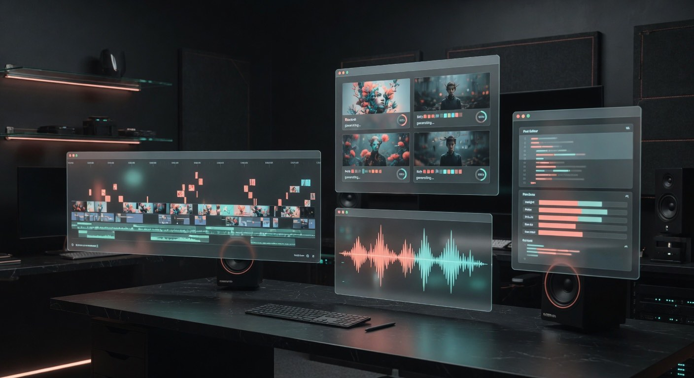

Models that matter
Tracking image, video, voice, music, text and agent models with a focus on real quality and professional use.

AI content intelligence
The operating reference for creating, directing and publishing AI content without losing control.
A living guide
Pixeria maps the new territory of creation: models, prompts, pipelines, rights, costs, quality, distribution and editorial judgement.
The goal is to help a team move from an idea to a publishable asset without getting lost in demos, hype and tool noise. In production, it powers Pixer Feed: the system that pushes generated image, video and audio to screens and live events.
Operating console
Tracking image, video, voice, music, text and agent models with a focus on real quality and professional use.
From brief to publication: ideation, scripting, art direction, production, review, versioning and delivery.
Practical comparisons for deciding when to prototype, when to automate and when to keep human control close.
Guides for preserving tone, truth, authorship and brand consistency in AI-augmented teams.
Featured models · July 2026
Updated from real production tests. The radar prioritizes control, rights and final quality over viral demos. On the radar: Seedance 2.5, with native 30-second clips and up to 50 multimodal references. These models feed Pixer Feed (AI signage on screens and live events).
Formats
Storyboards, generation, editing, dubbing, captions, loops and vertical assets.
Art direction, product imagery, synthetic photography, retouching, styles and visual consistency.
Voices, music, soundscapes, jingles, narration and sonic brand systems.
Scripts, newsletters, social posts, SEO, manuals, pitches, prompts and internal knowledge.
Campaigns, variants, creative testing, personalization and assets for each channel.
Automation, agents, governance, repositories, approvals and traceability.
Library
Pixeria works as a living library: production guides, no-hype comparisons, templates, reference prompts, tool reviews and playbooks by sector and format.